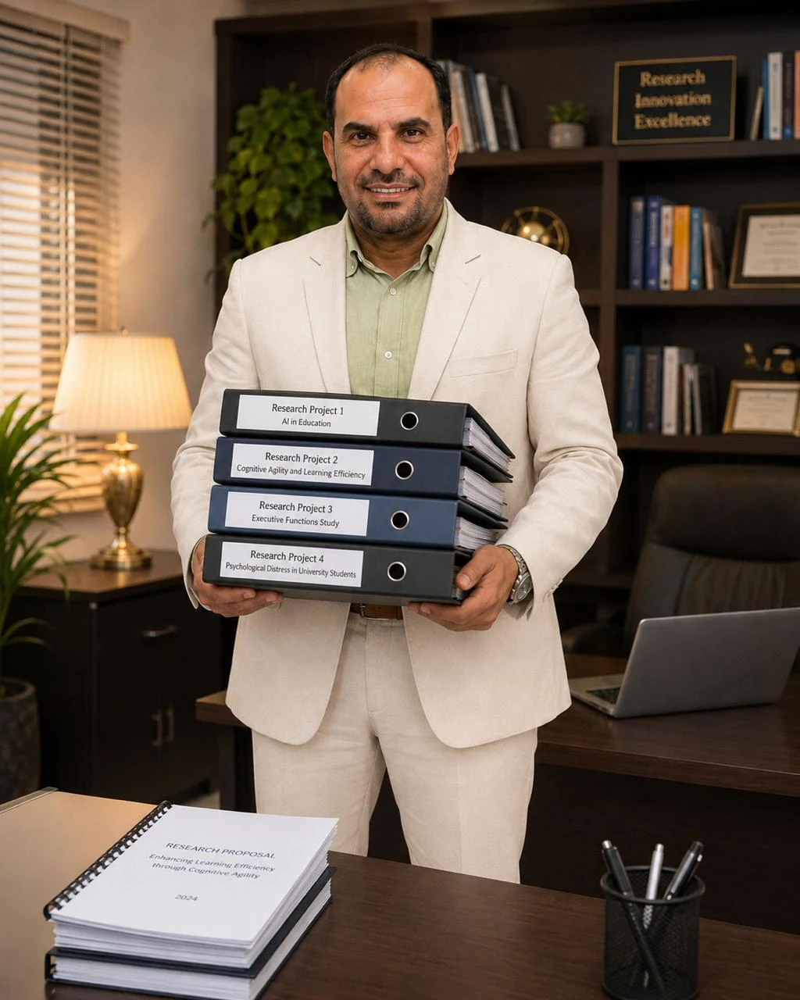
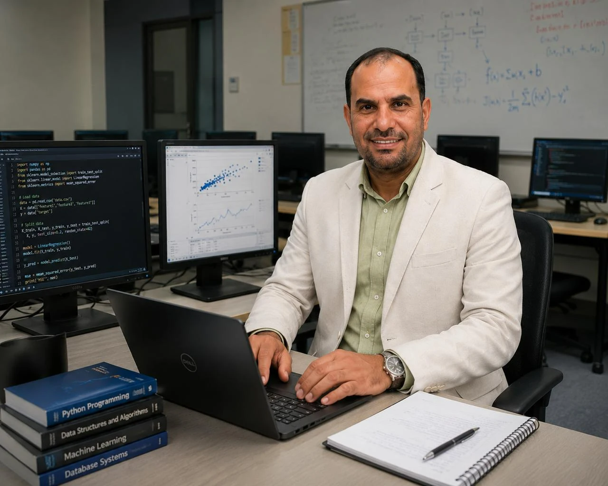
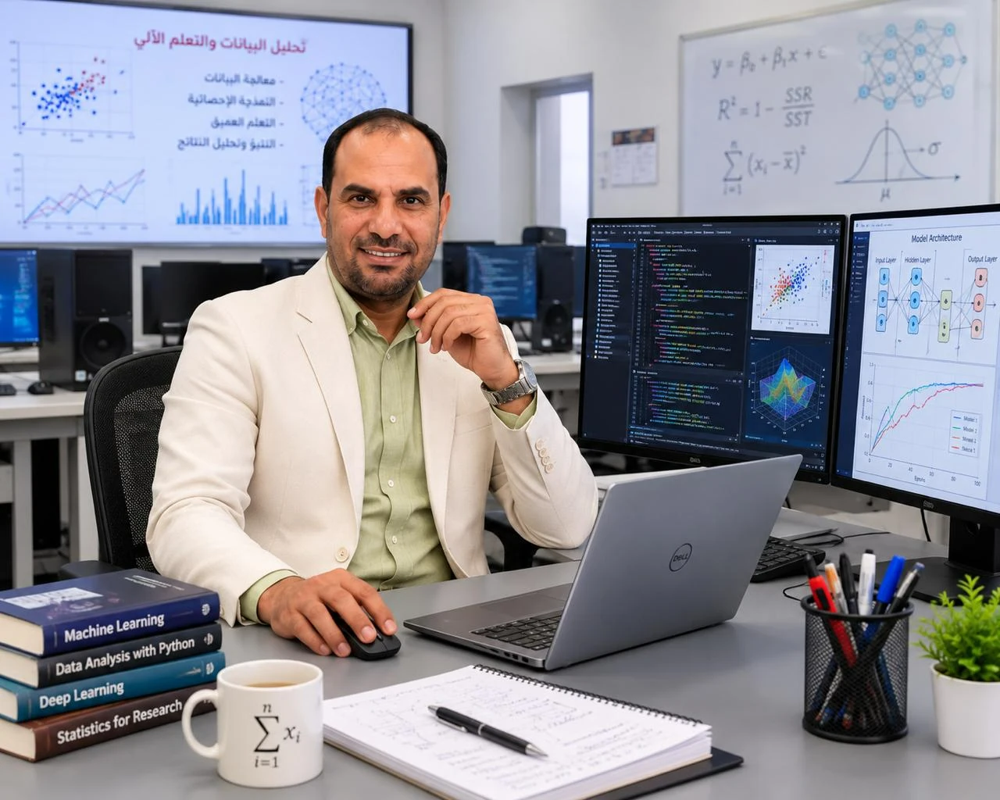
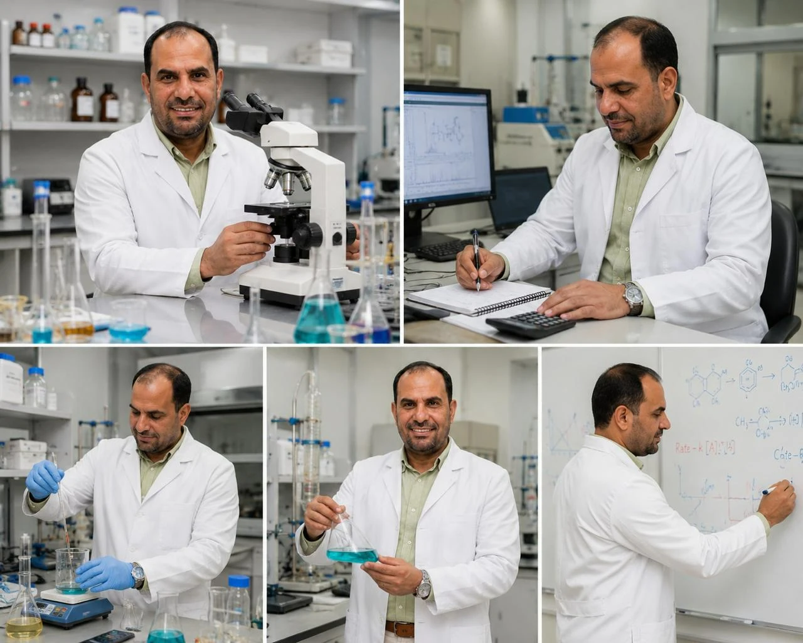

Applied Research and Institutional Collaborationالبحث التطبيقي والتعاون المؤسسي
Research Projects & Scientific Collaborationالمشروعات البحثية والتعاون العلمي
The research project portfolio of Prof. Dr. Khaled Fouad Khaled reflects a scientific career that integrates fundamental research, applied investigation, and academic–industrial collaboration. He participated as a principal investigator or co-investigator in eighteen documented applied research projects conducted with universities, research institutions, and industrial organisations in Egypt, Saudi Arabia, and the United States.
تعكس محفظة المشروعات البحثية للأستاذ الدكتور خالد فؤاد خالد مسيرة علمية تجمع بين البحث الأساسي والتطبيقات العملية والتعاون الأكاديمي والصناعي. وقد شارك بصفته باحثًا رئيسًا أو باحثًا مشاركًا في ثمانية عشر مشروعًا بحثيًا تطبيقيًا نُفذت بالتعاون مع جامعات ومؤسسات بحثية وجهات صناعية في مصر والمملكة العربية السعودية والولايات المتحدة الأمريكية.
The portfolio spans electrochemistry, corrosion science, metals and alloys protection, corrosion inhibitors, computational chemistry, molecular modelling, nanomaterials, chemistry education, interactive laboratories, and environmental awareness. Each project is presented using its verified title, role, supporting organisation, implementation period, and project identifier when available.
وتغطي هذه المشروعات مجالات الكيمياء الكهربية وعلوم تآكل المعادن وحماية السبائك ومثبطات التآكل والكيمياء الحاسوبية والنمذجة الجزيئية والمواد النانوية، إلى جانب تطوير تعليم الكيمياء والمختبرات التفاعلية والوعي البيئي. ويُعرض كل مشروع وفق عنوانه الموثق ودور الباحث والجهة الداعمة والفترة الزمنية والرقم المرجعي عند توافره.
Project information is based on the supplied official records. Financial and unnecessary contractual details are intentionally excluded from the public presentation.تستند بيانات المشروعات إلى القوائم والوثائق الرسمية المرفقة، وقد استُبعدت عمدًا من العرض العام التفاصيل المالية والتعاقدية غير اللازمة للتعريف العلمي بالمشروع.

Verified Portfolio Overviewملخص موثق لمحفظة المشروعات
Eighteen applied projects across three countriesثمانية عشر مشروعًا تطبيقيًا في ثلاث دول
Selected Applied Dimensionsنماذج مختارة من الأبعاد التطبيقية
A portfolio connecting experiment, computation and institutional developmentمحفظة تربط التجربة بالحساب والتطوير المؤسسي
The selected projects below illustrate the breadth of the portfolio rather than a ranking of importance.تعرض المشروعات المختارة تنوع المحفظة، ولا تمثل ترتيبًا لأهمية المشروعات.
02
Electrochemical Processes at the Electrode/Electrolyte Interface
العمليات الكهروكيميائية عند السطح الفاصل بين القطب والإلكتروليت
2002–2005 · Principal Investigator — PI2002–2005 · باحث رئيس — PI
08
Designing New Corrosion Inhibitors by QSAR and Molecular Dynamics Approaches
تصميم مثبطات تآكل جديدة باستخدام علاقات البنية والنشاط الكمية والديناميكا الجزيئية
2010 · Principal Investigator — PI2010 · باحث رئيس — PI
10
Development of a New Corrosion Protection Strategy for Water–Ammonia Refrigerating Systems
تطوير استراتيجية جديدة للحماية من التآكل في أنظمة التبريد المعتمدة على الماء والأمونيا
2010–2014 · Principal Investigator — PI2010–2014 · باحث رئيس — PI
14
Using Multivariate Neural-Network Analysis and Genetic Function Approximation Methods to Design New Corrosion Inhibitors for the Petroleum Industry
استخدام تحليل الشبكات العصبية متعددة المتغيرات وطرق التقريب بالدوال الجينية لتصميم مثبطات تآكل جديدة لصناعة البترول
2011–2015 · Principal Investigator — PI2011–2015 · باحث رئيس — PI
18
Establishment of an Interactive Chemistry Laboratory Using Multimedia
إنشاء مختبر كيمياء تفاعلي باستخدام الوسائط المتعددة
2016–2017 · Co-Investigator — Co-PI2016–2017 · باحث مشارك — Co-PI


Complete Documented Recordالسجل الموثق الكامل
Research project portfolioمحفظة المشروعات البحثية
01
Co-Investigator — Co-PIباحث مشارك — Co-PI
1998–2001
Corrosion Inhibition of Iron Using Organic/Inorganic Inhibitorsتثبيط تآكل الحديد باستخدام مثبطات عضوية وغير عضوية
An early collaborative project investigating organic and inorganic approaches to reducing iron corrosion and interpreting inhibitor–surface interactions.مشروع تعاوني مبكر لدراسة الأساليب العضوية وغير العضوية للحد من تآكل الحديد وتفسير تفاعلات المثبطات مع السطح المعدني.
- Supporting organisationالجهة الداعمةRobert A. Welch Foundation — Rice Universityمؤسسة Robert A. Welch — جامعة Rice
- CountryالدولةUnited Statesالولايات المتحدة الأمريكية
- Project referenceالرقم المرجعيGrant C-0426
Corrosion Scienceعلوم التآكلCorrosion Inhibitorsمثبطات التآكل
02
Principal Investigator — PIباحث رئيس — PI
2002–2005
Electrochemical Processes at the Electrode/Electrolyte Interfaceالعمليات الكهروكيميائية عند السطح الفاصل بين القطب والإلكتروليت
A fundamental electrochemistry project focused on charge transfer and reactions occurring at the electrode–electrolyte interface.مشروع في الكيمياء الكهربية الأساسية ركز على انتقال الشحنة والتفاعلات التي تحدث عند السطح الفاصل بين القطب والإلكتروليت.
- Supporting organisationالجهة الداعمةRobert A. Welch Foundation — Rice Universityمؤسسة Robert A. Welch — جامعة Rice
- CountryالدولةUnited Statesالولايات المتحدة الأمريكية
- Project referenceالرقم المرجعيGrant C-0426
Electrochemistryالكيمياء الكهربيةInterfacial Processesعمليات السطوح البينية
03
Co-Investigator — Co-PIباحث مشارك — Co-PI
2005–2006
Development of Environmental Awareness Through Future Teachers in Egyptتنمية الوعي البيئي من خلال معلمي المستقبل في مصر
An educational-development project supporting environmental awareness within the preparation of future teachers in Egypt.مشروع لتطوير التعليم ودعم الوعي البيئي ضمن برامج إعداد معلمي المستقبل في مصر.
- Supporting organisationالجهة الداعمةFOEP — Faculty of Education, Ain Shams Universityمشروع تطوير كليات التربية FOEP — كلية التربية، جامعة عين شمس
- CountryالدولةEgyptمصر
Environmental Educationالتربية البيئيةTeacher Preparationإعداد المعلم
04
Co-Investigator — Co-PIباحث مشارك — Co-PI
2005–2006
Education of Space and Earth Sciences Using Advanced Information Technologyتعليم علوم الفضاء والأرض باستخدام تكنولوجيا المعلومات المتقدمة
A project integrating advanced information technology into the teaching of space and Earth sciences.مشروع لدمج تكنولوجيا المعلومات المتقدمة في تعليم علوم الفضاء والأرض.
- Supporting organisationالجهة الداعمةHEEPF — Faculty of Education, Ain Shams Universityمشروعات تطوير التعليم العالي HEEPF — كلية التربية، جامعة عين شمس
- CountryالدولةEgyptمصر
Science Educationتعليم العلومEducational Technologyتكنولوجيا التعليم
05
Co-Investigator — Co-PIباحث مشارك — Co-PI
2005–2006
Higher Studies Enhancement Projectمشروع تطوير وتعزيز الدراسات العليا
An institutional project concerned with strengthening postgraduate education and its supporting academic systems.مشروع مؤسسي استهدف تعزيز الدراسات العليا وتطوير النظم الأكاديمية الداعمة لها.
- Supporting organisationالجهة الداعمةFOEP — Faculty of Education, Ain Shams Universityمشروع تطوير كليات التربية FOEP — كلية التربية، جامعة عين شمس
- CountryالدولةEgyptمصر
Postgraduate Educationالدراسات العلياInstitutional Developmentالتطوير المؤسسي
06
Co-Investigator — Co-PIباحث مشارك — Co-PI
2008–2009
Utilising Mechanical, Chemical, Electrochemical, Photoelectrochemical and Nanotechnology Methods for the Anti-Corrosion of Copper and Some of Its Alloys in Aqueous Mediaاستخدام الطرق الميكانيكية والكيميائية والكهروكيميائية والكهروضوئية وتقنيات النانو لحماية النحاس وبعض سبائكه من التآكل في الأوساط المائية
An interdisciplinary study combining several protection routes to examine copper and copper-alloy corrosion in aqueous environments.دراسة متعددة التخصصات جمعت عدة مسارات للحماية من أجل فحص تآكل النحاس وسبائكه في الأوساط المائية.
- Supporting organisationالجهة الداعمةTaif Universityجامعة الطائف
- CountryالدولةSaudi Arabiaالمملكة العربية السعودية
- Project referenceالرقم المرجعي1-429-134
Copper Corrosionتآكل النحاسNanotechnologyتقنيات النانوMaterials Protectionحماية المواد
07
Principal Investigator — PIباحث رئيس — PI
2009
Experimental and Theoretical Studies on the Effect of Surfactant Adsorption Phenomena on Corrosion Inhibition in the Petroleum Industryدراسات تجريبية ونظرية لتأثير ظواهر امتزاز المواد الفعالة سطحيًا في تثبيط التآكل في صناعة البترول
A combined experimental and theoretical investigation of surfactant adsorption and its role in corrosion inhibition for petroleum-related systems.دراسة تجريبية ونظرية متكاملة لامتزاز المواد الفعالة سطحيًا ودورها في تثبيط التآكل بالأنظمة المرتبطة بصناعة البترول.
- Supporting organisationالجهة الداعمةTaif Universityجامعة الطائف
- CountryالدولةSaudi Arabiaالمملكة العربية السعودية
- Project referenceالرقم المرجعي1-430-397
AdsorptionالامتزازCorrosion Inhibitorsمثبطات التآكلPetroleum Applicationsتطبيقات بترولية
08
Principal Investigator — PIباحث رئيس — PI
2010
Designing New Corrosion Inhibitors by QSAR and Molecular Dynamics Approachesتصميم مثبطات تآكل جديدة باستخدام علاقات البنية والنشاط الكمية والديناميكا الجزيئية
A computational project using QSAR and molecular-dynamics approaches to guide the design and evaluation of corrosion inhibitors.مشروع حاسوبي استخدم علاقات البنية والنشاط الكمية والديناميكا الجزيئية لتوجيه تصميم مثبطات التآكل وتقييمها.
- Supporting organisationالجهة الداعمةCenter of Research Excellence in Corrosion — King Fahd University of Petroleum and Mineralsمركز التميز البحثي في تآكل المعادن — جامعة الملك فهد للبترول والمعادن
- CountryالدولةSaudi Arabiaالمملكة العربية السعودية
- Project referenceالرقم المرجعيCR-03-2010
QSARعلاقات البنية والنشاط الكميةMolecular Dynamicsالديناميكا الجزيئيةComputational Chemistryالكيمياء الحاسوبية
09
Principal Investigator — PIباحث رئيس — PI
2010
Understanding Corrosion Inhibition: Study of the Corrosion Inhibition of Iron Using Furan Derivatives by Non-Conventional Methodsفهم تثبيط التآكل: دراسة تثبيط تآكل الحديد باستخدام مشتقات الفيوران بطرق غير تقليدية
A focused project examining furan derivatives as iron-corrosion inhibitors through non-conventional analytical approaches.مشروع متخصص لفحص مشتقات الفيوران كمثبطات لتآكل الحديد باستخدام أساليب تحليلية غير تقليدية.
- Supporting organisationالجهة الداعمةTaif Universityجامعة الطائف
- CountryالدولةSaudi Arabiaالمملكة العربية السعودية
- Project referenceالرقم المرجعي1-431-713
Iron Corrosionتآكل الحديدFuran Derivativesمشتقات الفيورانNon-Conventional Methodsطرق غير تقليدية
10
Principal Investigator — PIباحث رئيس — PI
2010–2014
Development of a New Corrosion Protection Strategy for Water–Ammonia Refrigerating Systemsتطوير استراتيجية جديدة للحماية من التآكل في أنظمة التبريد المعتمدة على الماء والأمونيا
An applied project developing a corrosion-protection strategy for water–ammonia refrigeration systems.مشروع تطبيقي لتطوير استراتيجية للحماية من التآكل في أنظمة التبريد القائمة على الماء والأمونيا.
- Supporting organisationالجهة الداعمةKing Abdulaziz City for Science and Technologyمدينة الملك عبد العزيز للعلوم والتكنولوجيا
- CountryالدولةSaudi Arabiaالمملكة العربية السعودية
- Project referenceالرقم المرجعيAR-3066
Refrigeration Systemsأنظمة التبريدCorrosion Protectionالحماية من التآكلIndustrial Applicationsالتطبيقات الصناعية
11
Principal Investigator — PIباحث رئيس — PI
2010–2011
Spectral, Thermal and Inhibition Studies of Transition-Metal Complexes with Thiosemicarbazide and Thiosemicarbazone Derivatives Prepared by Electrochemical Methodsدراسات طيفية وحرارية ودراسات تثبيط التآكل لمتراكبات بعض العناصر الانتقالية مع مشتقات الثيوسيميكربازيد والثيوسيميكربازون المحضرة بطرق كهروكيميائية
A project linking electrochemical synthesis with spectral, thermal and corrosion-inhibition studies of transition-metal complexes.مشروع ربط التحضير الكهروكيميائي بالدراسات الطيفية والحرارية وتقييم تثبيط التآكل لمتراكبات العناصر الانتقالية.
- Supporting organisationالجهة الداعمةTaif Universityجامعة الطائف
- CountryالدولةSaudi Arabiaالمملكة العربية السعودية
- Project referenceالرقم المرجعي1-431-636
Coordination Chemistryالكيمياء التناسقيةElectrochemical Synthesisالتحضير الكهروكيميائيCorrosion Inhibitionتثبيط التآكل
12
Principal Investigator — PIباحث رئيس — PI
2011
Innovative Methods for Corrosion Protection of Refrigerating Systemsطرق مبتكرة لحماية أنظمة التبريد من التآكل
An applied investigation of innovative methods for improving corrosion protection in refrigeration systems.دراسة تطبيقية لأساليب مبتكرة تهدف إلى تحسين الحماية من التآكل في أنظمة التبريد.
- Supporting organisationالجهة الداعمةTaif Universityجامعة الطائف
- CountryالدولةSaudi Arabiaالمملكة العربية السعودية
- Project referenceالرقم المرجعي1-432-1090
Refrigeration Systemsأنظمة التبريدCorrosion Protectionالحماية من التآكل
13
Principal Investigator — PIباحث رئيس — PI
2011
Understanding Corrosion Inhibition: A Surface-Science Study of Thiophene Derivatives on Iron Surfacesفهم تثبيط التآكل: دراسة في علم الأسطح لمشتقات الثيوفين على أسطح الحديد
A surface-science project investigating the interaction of thiophene derivatives with iron surfaces in corrosion-inhibition contexts.مشروع في علم الأسطح لدراسة تفاعل مشتقات الثيوفين مع أسطح الحديد في سياق تثبيط التآكل.
- Supporting organisationالجهة الداعمةTaif Universityجامعة الطائف
- CountryالدولةSaudi Arabiaالمملكة العربية السعودية
- Project referenceالرقم المرجعي1-432-1128
Surface Scienceعلم الأسطحThiophene Derivativesمشتقات الثيوفينIron Corrosionتآكل الحديد
14
Principal Investigator — PIباحث رئيس — PI
2011–2015
Using Multivariate Neural-Network Analysis and Genetic Function Approximation Methods to Design New Corrosion Inhibitors for the Petroleum Industryاستخدام تحليل الشبكات العصبية متعددة المتغيرات وطرق التقريب بالدوال الجينية لتصميم مثبطات تآكل جديدة لصناعة البترول
A data-driven industrial research project applying multivariate neural networks and genetic-function approximation to corrosion-inhibitor design.مشروع بحثي صناعي قائم على البيانات طبق الشبكات العصبية متعددة المتغيرات والتقريب بالدوال الجينية في تصميم مثبطات التآكل.
- Supporting organisationالجهة الداعمةSaudi Aramcoشركة أرامكو السعودية
- CountryالدولةSaudi Arabiaالمملكة العربية السعودية
Neural Networksالشبكات العصبيةData Analysisتحليل البياناتInhibitor Designتصميم المثبطاتPetroleum Industryصناعة البترول
15
Co-Investigator — Co-PIباحث مشارك — Co-PI
2011
Copper(II) Complexes of Benzimidazole and Pyridine Derivatives with Superoxide-Scavenging and Pharmacological Activitiesمتراكبات النحاس الثنائي مع مشتقات البنزيميدازول والبيريدين ذات أنشطة إزالة فوق الأكسيد والأنشطة الدوائية
A coordination-chemistry project studying copper(II) complexes of benzimidazole and pyridine derivatives and their documented functional activities.مشروع في الكيمياء التناسقية لدراسة متراكبات النحاس الثنائي مع مشتقات البنزيميدازول والبيريدين وأنشطتها الوظيفية الموثقة.
- Supporting organisationالجهة الداعمةTaif Universityجامعة الطائف
- CountryالدولةSaudi Arabiaالمملكة العربية السعودية
Coordination Chemistryالكيمياء التناسقيةBioinorganic Chemistryالكيمياء الحيوية غير العضوية
16
Co-Investigator — Co-PIباحث مشارك — Co-PI
2011
Preparation of Ferromagnetic Materials from the Micro- to Nanoscale Using Ceramic and Milling Methods to Address Sulphide-Polluted Airتحضير مواد فيرومغناطيسية في المدى من الميكرومتر إلى النانومتر باستخدام الطرق الخزفية والطحن لمعالجة مشكلة تلوث الهواء بالكبريتيدات
A materials project using ceramic and milling methods to prepare ferromagnetic materials across micro- and nanoscale ranges for an environmental application.مشروع في علوم المواد استخدم الطرق الخزفية والطحن لتحضير مواد فيرومغناطيسية في المدى الميكروي والنانوي لتطبيق بيئي.
- Supporting organisationالجهة الداعمةTaif Universityجامعة الطائف
- CountryالدولةSaudi Arabiaالمملكة العربية السعودية
- Project referenceالرقم المرجعي1-429-117
Nanomaterialsالمواد النانويةFerromagnetic Materialsالمواد الفيرومغناطيسيةEnvironmental Applicationsالتطبيقات البيئية
17
Co-Investigator — Co-PIباحث مشارك — Co-PI
2016–2017
Microstructure Evolution and Corrosion Resistance of NiTi Shape-Memory Alloys Under Various Ageing Conditionsتطور البنية المجهرية ومقاومة التآكل لسبائك النيكل–تيتانيوم ذات ذاكرة الشكل تحت ظروف تعتيق مختلفة
A materials-characterisation project examining microstructural development and corrosion resistance in NiTi shape-memory alloys under different ageing conditions.مشروع لتوصيف المواد ودراسة تطور البنية المجهرية ومقاومة التآكل في سبائك النيكل–تيتانيوم ذات ذاكرة الشكل تحت ظروف تعتيق مختلفة.
- Supporting organisationالجهة الداعمةTaif Universityجامعة الطائف
- CountryالدولةSaudi Arabiaالمملكة العربية السعودية
- Project referenceالرقم المرجعي1-437-4758
Shape-Memory Alloysسبائك ذاكرة الشكلMicrostructureالبنية المجهريةCorrosion Resistanceمقاومة التآكل
18
Co-Investigator — Co-PIباحث مشارك — Co-PI
2016–2017
Establishment of an Interactive Chemistry Laboratory Using Multimediaإنشاء مختبر كيمياء تفاعلي باستخدام الوسائط المتعددة
An educational-technology project establishing an interactive chemistry laboratory supported by multimedia resources.مشروع في تكنولوجيا التعليم لإنشاء مختبر كيمياء تفاعلي مدعوم بموارد الوسائط المتعددة.
- Supporting organisationالجهة الداعمةUniversity of Hailجامعة حائل
- CountryالدولةSaudi Arabiaالمملكة العربية السعودية
- Project referenceالرقم المرجعي0150194
Chemistry Educationتعليم الكيمياءMultimediaالوسائط المتعددةInteractive Laboratoriesالمختبرات التفاعلية
No projects match the selected search and filter.لا توجد مشروعات تطابق البحث والتصفية المحددين.

Research Methodologiesالمنهجيات البحثية
Integrated experimental and computational methodsتكامل المنهجيات التجريبية والحاسوبية
Electrochemical measurementsالقياسات الكهروكيميائية
Corrosion testingاختبارات التآكل
Surface and materials characterisationتوصيف الأسطح والمواد
Spectral and thermal analysisالتحليل الطيفي والحراري
Quantum-chemical calculationsحسابات الكيمياء الكمية
QSAR and molecular dynamicsQSAR والديناميكا الجزيئية
Neural-network analysisتحليل الشبكات العصبية
Genetic-function approximationالتقريب بالدوال الجينية
Nanomaterials preparationتحضير المواد النانوية
Multimedia-based interactive learningالتعلم التفاعلي بالوسائط المتعددة
Project Timelineالخط الزمني للمشروعات
Two decades of documented research activityعقدان من النشاط البحثي الموثق
- Corrosion inhibition of ironتثبيط تآكل الحديد
- Electrode/electrolyte interfaceواجهة القطب والإلكتروليت
- Environmental awarenessالوعي البيئي
- Space and Earth sciencesعلوم الفضاء والأرض
- Higher studies enhancementتطوير الدراسات العليا
- Copper and alloy protectionحماية النحاس وسبائكه
- Surfactant adsorptionامتزاز المواد الفعالة سطحيًا
- QSAR and molecular dynamicsQSAR والديناميكا الجزيئية
- Furan derivativesمشتقات الفيوران
- Water–ammonia refrigerationأنظمة التبريد ماء–أمونيا
- Transition-metal complexesمتراكبات العناصر الانتقالية
- Refrigeration protectionحماية أنظمة التبريد
- Thiophene derivativesمشتقات الثيوفين
- Copper complexesمتراكبات النحاس
- Ferromagnetic materialsالمواد الفيرومغناطيسية
- Neural-network inhibitor designتصميم المثبطات بالشبكات العصبية
- NiTi shape-memory alloysسبائك NiTi ذات ذاكرة الشكل
- Interactive chemistry laboratoryمختبر الكيمياء التفاعلي
Supporting Organisations & Research Partnershipsالجهات الداعمة والشراكات البحثية
Academic, research and industrial collaborationتعاون أكاديمي وبحثي وصناعي
Scientific and Applied Dimensionsالأبعاد العلمية والتطبيقية
From corrosion mechanisms to education and environmental applicationsمن آليات التآكل إلى التطبيقات التعليمية والبيئية
The documented projects reveal a progressive research programme integrating fundamental electrochemical studies of corrosion with the development of protection strategies and computational prediction of inhibitor behaviour. The portfolio also extends to shape-memory alloys, nanomaterials, environmental applications, refrigeration systems, petroleum-related research, chemistry education, and interactive laboratory development.
تكشف المشروعات الموثقة عن برنامج بحثي متدرج يجمع بين دراسة الأسس الكهروكيميائية للتآكل وتطوير استراتيجيات الحماية والتنبؤ بسلوك المثبطات باستخدام المناهج الحاسوبية. كما توسعت المحفظة لتشمل سبائك الذاكرة الشكلية والمواد النانوية والتطبيقات البيئية وأنظمة التبريد والبحوث المرتبطة بصناعة البترول، إلى جانب تطوير تعليم الكيمياء والمختبرات التفاعلية.
A recurring feature is the integration of experiment and computation. Laboratory measurements are complemented by quantitative structure–activity relationships, molecular dynamics, neural-network analysis, and scientific data processing.
وتبرز في هذه المحفظة العلاقة بين التجربة والحساب؛ إذ تتكامل القياسات المعملية مع علاقات البنية والنشاط الكمية والديناميكا الجزيئية والشبكات العصبية ومعالجة البيانات العلمية.
1Specialised laboratoriesالمعامل المتخصصة
2Multidisciplinary teamsفرق متعددة التخصصات
3International and industrial collaborationالتعاون الدولي والصناعي
4Scientific, educational and societal applicationsتطبيقات علمية وتعليمية ومجتمعية
Selected Project Documentationوثائق مختارة للمشروعات
Public-view records prepared for the websiteنسخ عامة أُعدت للعرض داخل الموقع
The displayed records retain the information needed to identify the project and institution. Areas containing financial clauses or unnecessary personal contact details were excluded from the public-view derivatives.تحتفظ الوثائق المعروضة بالمعلومات اللازمة للتعريف بالمشروع والجهة، مع استبعاد مناطق البنود المالية وبيانات التواصل الشخصية غير اللازمة من النسخ المخصصة للنشر العام.
Certified List of Principal-Investigator Projects at Taif Universityقائمة معتمدة بمشروعات الباحث الرئيس بجامعة الطائف
A certified departmental list documenting principal-investigator projects undertaken during the Taif University period.قائمة معتمدة من القسم توثق مشروعات نُفذت بصفة باحث رئيس خلال فترة العمل بجامعة الطائف.
Certified List of Co-Investigator Projects at Taif Universityقائمة معتمدة بمشروعات الباحث المشارك بجامعة الطائف
A certified list documenting selected projects undertaken as co-investigator at Taif University.قائمة معتمدة توثق عددًا من المشروعات المنفذة بصفة باحث مشارك في جامعة الطائف.
KACST Letter for the Water–Ammonia Refrigeration Projectخطاب مدينة الملك عبد العزيز لمشروع أنظمة التبريد ماء–أمونيا
An official letter identifying the project title, principal investigator and project reference.خطاب رسمي يوضح عنوان المشروع والباحث الرئيس والرقم المرجعي للمشروع.
Saudi Aramco University Collaboration Acceptanceخطاب قبول برنامج التعاون الجامعي من أرامكو السعودية
A public-view crop of the acceptance message, with personal contact details excluded.نسخة عامة مقتصة من خطاب القبول بعد استبعاد بيانات التواصل الشخصية.
Acceptance Letter for the QSAR and Molecular-Dynamics Projectخطاب قبول مشروع QSAR والديناميكا الجزيئية
An official letter from King Fahd University of Petroleum and Minerals documenting project acceptance and the project reference.خطاب رسمي من جامعة الملك فهد للبترول والمعادن يوثق قبول المشروع ورقمه المرجعي.
Complete Approved-Projects Record Including the Furan-Derivatives Projectالسجل الكامل للمشروعات المعتمدة متضمنًا مشروع مشتقات الفيوران
The complete approved-projects record documents the institution, research role, project title and reference details, including the furan-derivatives project.يعرض السجل الكامل المعتمد الجهة والدور البحثي وعنوان المشروع وبياناته المرجعية، ومن بينها مشروع مشتقات الفيوران.
Taif University Research Collaboration Recordخطاب توثيق التعاون البحثي بجامعة الطائف
The complete institutional letter confirms participation in research projects supported by Taif University, King Abdulaziz City for Science and Technology, King Fahd University of Petroleum and Minerals, and Saudi Aramco.الخطاب المؤسسي الكامل يؤكد المشاركة في مشروعات بحثية مدعومة من جامعة الطائف، ومدينة الملك عبد العزيز للعلوم والتقنية، وجامعة الملك فهد للبترول والمعادن، وشركة أرامكو السعودية.